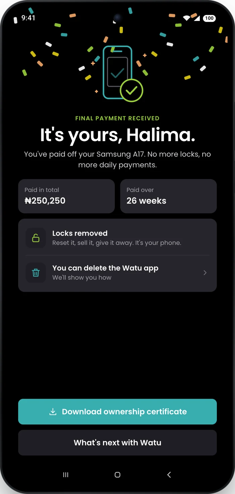
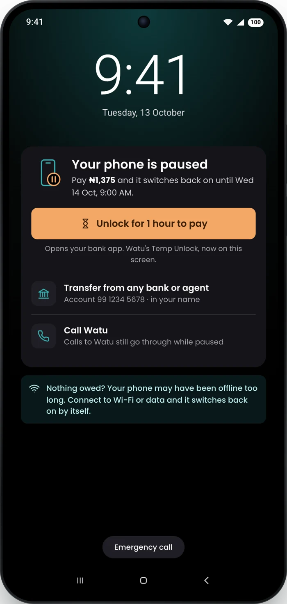
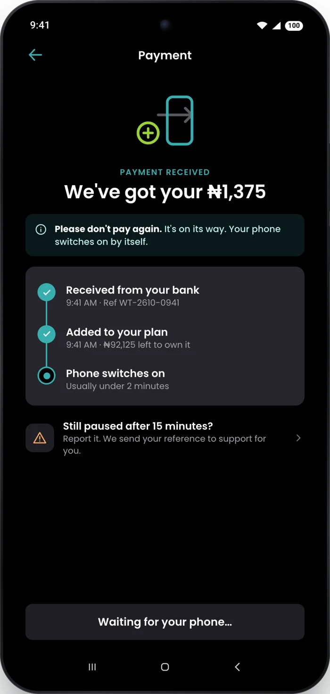

I read 1,176 Watu reviews from Kenya and Nigeria since January 2025 and tagged every clear complaint by hand. The loop breaks at two moments: right after the last payment, and while a paused phone waits for a payment to land. I designed the fixes inside Watu's current app, with a working prototype, a film and the system in code.
109 clear complaints, by theme
In a customer's words
why did watu keep displaying complete your payment to unlock new features after completing it already

1 · The finish lineTotal paid, locks removed, a certificate, permission to delete the app. Then an honest "what's next".
2 · The lock screen paysWhat's owed, what it buys, Watu's own Temp Unlock up front, and an account number for any bank or agent.
3 · "Please don't pay again"One tracker after every payment: received, added, switching on, with a reference and an expected time.Self-initiated, not affiliated with Watu. Screens rebuilt from Watu's Play Store screenshots; customers and amounts made up. Reviews: Google Play, Watu Kenya and Watu Nigeria, Jan 2025 to Oct 2026.